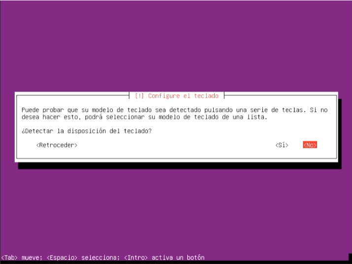
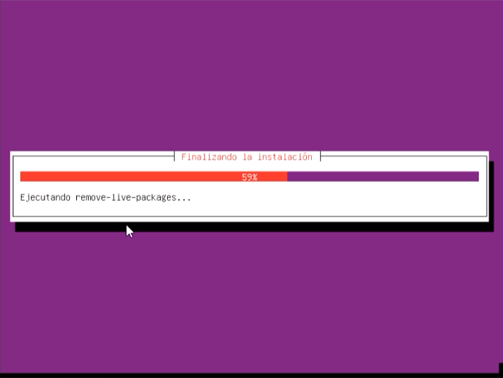

UBUNTU
Artikulu honetan, Proxmoxen Ubuntu makina birtual bat nola sortzen den azalduko da.
Jarraitzeko pausuak
-
‘Crear VM’-ri emango diogu eta eta aurreko orrian deskargatu dugun ISO-a aukeratuko dugu eta nahi ditugun datuekin beteko dugu eta instalazioari ekingo diogu:
-
Makina nahieran konfiguratuko dugu, ala nola: hizkuntza, kokapena eta teklatua:
 -
Konponentzeak kargatuko dira orain, itxarotea tokatuko zaigu:
-
Sarearen konfigurazioarekin hasiko gara, datuak (makinaren izena eta domeinua) nahieran:
-
Jarraian, erabiltzaileak eta pasahitzak kudeatzen hasiko gara:
-
Ondoren, gure makinaren erlojua konfiguratuko dugu:
-
Hau egin ondoren disken partizioen kudeaketari ekingo diogu:
-
Honen ondoren instalazioa betearazi arte itxaron beharko dugu:
-
Jarraituz, paketeen kudeatzailea konfiguratzeari ekingo diogu, nahieran erabakiko ditugu hemengo aukera desberdinak:
-
Konfiguratzaileari itxarongo diogu...

-
Instalazioa amaitu denez sistema berrereabiarazi beharko dugu:
-
Azkenengoz itxarongo dugu...
 -
Ubuntu makina birtual bat sortu duzu dagoeneko!